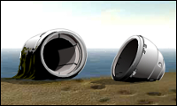
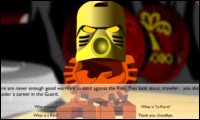

A world full of mystery and danger, wonder and legend.
 Every so often, a new area of the island will open up for you to explore. For example, at the beginning of January only one beach was accessible, because a lava flow had cut it off from the rest of the island. But by February, the lava had cooled, opening the way to the village of Ta-Koro.
If you visit Bionicle.com regularly, you will eventually see an announcement on the homepage about a new area of the island.
Exploring the island of Mata Nui is very different from a traditional video game. There are many places to explore and secrets to uncover, and you may need to solve puzzles or perform tasks to reach certain locations. There is no single, clear goal for you to accomplish -- finding your true purpose is up to you, and it may or may not be possible to "win the game."
To journey across Mata Nui, move your mouse across the scene before you. As your mouse reaches the left or right edge of the scene, it will shift in that direction, just as if you were turning your head. In some locations you can look up and down as well.
Normally your mouse cursor will look like an arrow.
If you see your cursor change to a pointing finger, you can click to move forward, or inspect a particular object. There are many strange devices on Mata Nui; clicking on some of them may cause interesting effects.
If you see a symbol that looks like this , you can click to turn all the way around, and face the opposite direction. You can use this feature to retrace your steps, and return the way you came.
If you meet one of the inhabitants of Mata Nui, you may be able to talk to them by clicking. Some of the island-dwellers have very little to say, but others will start a conversation with you. When you see a screen with a set of questions, click on one of them to continue the dialogue. You could learn very useful information from talking to the island's inhabitants...
About This Site
LEGO TECHNIC Bionicle is a totally new concept where storytelling is in focus. Children can learn about the universe and follow the development of the story on www.Bionicle.com.
The story begins at the island of Mata Nui, where the six Toa heroes with destiny and the six Turaga priests are the main characters. The six Toa will be released in Europe in February and in the States in August.
©2001 The LEGO Group. All rights reserved. Use of this site signifies your agreement to the terms of use.
TM and ® indicate trademarks of the LEGO Company.
Privacy Policy
Legal Notice
Storysite Design and Technical Production by Templar Studios, LLC.